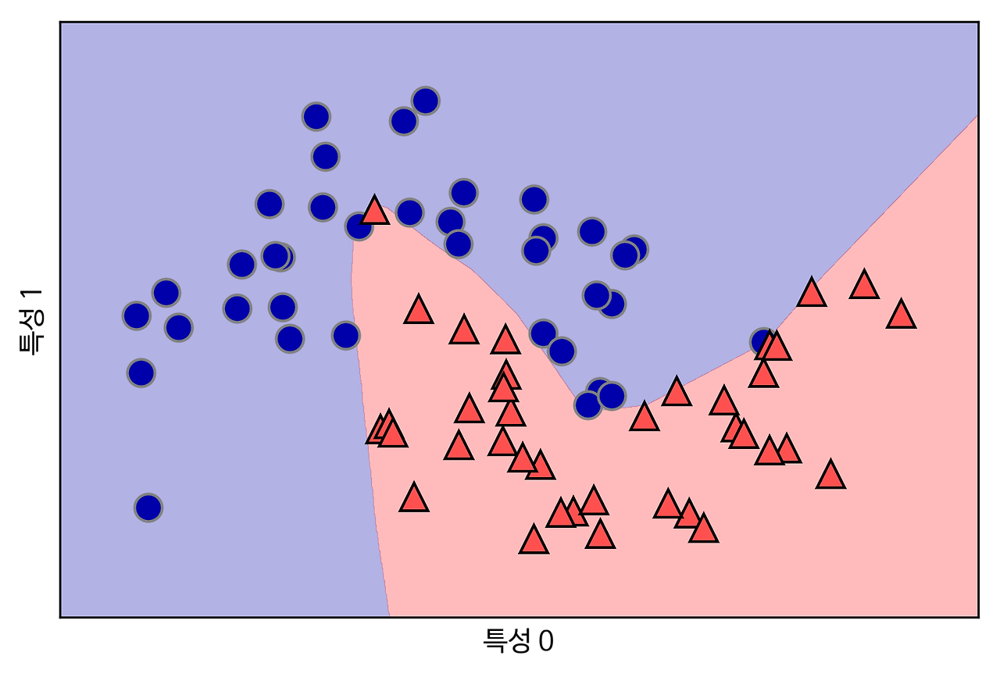
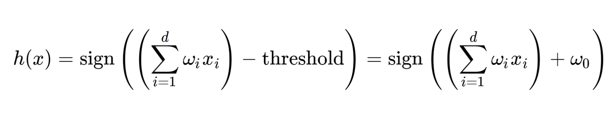
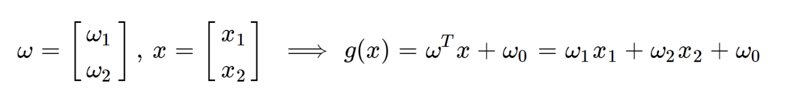
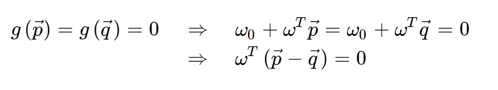
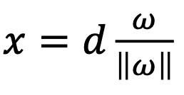
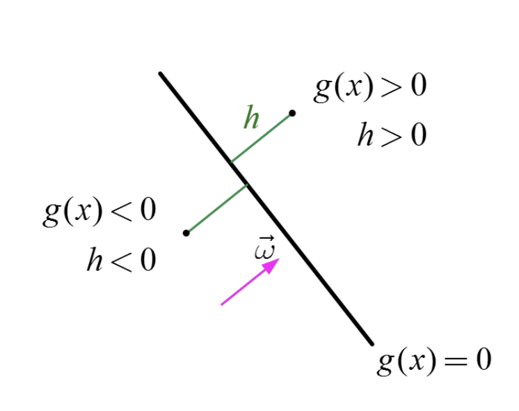
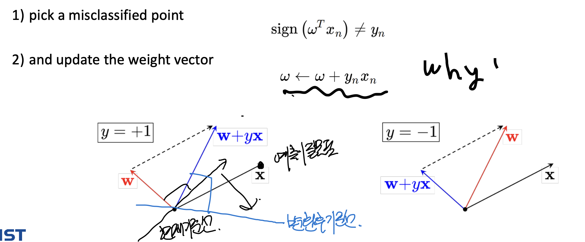

Ch3_1. Classification_Perceptron
Optimization
Regression
에 이어
Deeplearning 이 잘하는 것,
Classification

단순하다, 데이터들을 공간에 나열후,
같은 특성을 가진 데이터들끼리 구분해주는
(구분선)을 정의하는 것이다.
이렇게 되면,
새로운 데이터가 있을때
어디 속해야 하는지를 구분선이 알려준다.
바로 구분 방법 설명에 들어가겠다.
input 데이터들을 x벡터로 정의하고,
같은 디멘션의 임의의 weight 벡터를 정의한다.

그리고, classification 분류 기준은 다음과 같다.
특정 기준치(threshold)보다
SUM(weight * x)이 큰지 작은지로
그룹A에 속하는지 그룹B에 속하는지
나누어 줄 수 있다.

즉, w벡터가 구분선 역할을 하는 것이다.
(이부분이 아하 모멘트)
그리고, threshold를 w0로 정의하자.

tricky 하게 x0 = +1 로 정의하여,
w0도 시그마 안으로 넣어버리자.

자 이렇게 만들면, 장점이 백터의 연산으로
다음과 같이 바꿀 수 있다.

이 함수가 퍼셉트론
(인경신경망의 가장 기본적인 구조)
의 수학적 표현이다.
정확히 이해하기 위해서,
퍼셉트론의 기하학적인 의미에
대해서 살펴보자.
위에서 h(x) = g(x) = wTx + wo으로 정의하자.
자 x백터가 우리가 분류할 녀석이고,
분류 기준선을 좌표평면에 g(x) = 0
으로 나타내었다.

g(x) >0, <0 이냐 . 에따라서 분류를 진행한다.

분류 기준선 위에 있는
p,q 백터가 있다고 해보자.


마지막 백터 식이 말하고 있는 것은,
바로, p-q 백터와 w백터가 수직이라는 것이다.
여기서 p-q백터는 g(x) 기준선 자체 백터이다.
결국, W(weight백터)와 기준선은 수직이라는 것.
다시 위 그림에서,
벡터 x가 원점에서 g(x)에 수직으로 그은 벡터라면,
다음과 같이 표현할 수 있다.
(방향은 w, 크기는 d)

이때, x는 g(x) =0 위의 점이므로
g(x) = 0 식에서 x 대신. 위 d,w식을 대입하면,

이제는, x가 g(x)>0 구간에 있다고 가정하자.

그렇다면, x를 수직과 수평성분으로 나눌 수 있으며,

최종적으로,
h = g(x) / ||w||
h(x) 를 orthogonal signed distance from the line
이라 부르고,
선을 기준으로
g(x) >0 이면, h>0
g(x) <0 이면, h<0

궁극적으로, 밑의 그림처럼
기준선을 정의하여 분류하는 것이 최종 목표이고,
그러기 위해서는 w가 올바르게 정의되어야 한다.

w는 iteration과정을 통해서,
가장 올바른 기준선으로 정의되며
알고리즘은 다음과 같다.
예측이 잘못된 점이 잇을때,
그 점 방향으로 w가 회전한다고 생각하면 된다.
그렇게 되면,
기준선이 같은 각도로 회전함을 알 수 있다.
